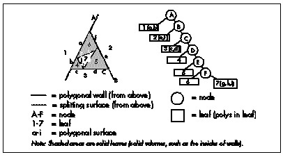
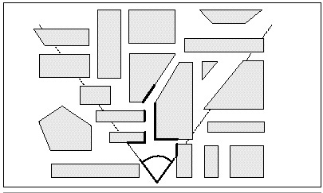

Figure 64.3 The substance described by node E.
| Previous | Table of Contents | Next |
Before diving into VSD, let me note that each Quake level is stored as a single huge 3-D BSP tree. This BSP tree, like any BSP, subdivides space, in this case along the planes of the polygons. However, unlike the BSP tree I presented in Chapter 62, Quake’s BSP tree does not store polygons in the tree nodes, as part of the splitting planes, but rather in the empty (non-solid) leaves, as shown in overhead view in Figure 64.1.
Correct drawing order can be obtained by drawing the leaves in front-to-back or back-to-front BSP order, again as discussed in Chapter 62. Also, because BSP leaves are always convex and the polygons are on the boundaries of the BSP leaves, facing inward, the polygons in a given leaf can never obscure one another and can be drawn in any order. (This is a general property of convex polyhedra.)
The process of VSD would ideally work as follows: First, you would cull all polygons that are completely outside the view frustum (view pyramid), and would clip away the irrelevant portions of any polygons that are partially outside. Then, you would draw only those pixels of each polygon that are actually visible from the current viewpoint, as shown in overhead view in Figure 64.2, wasting no time overdrawing pixels multiple times; note how little of the polygon sets in Figure 64.2 actually need to be drawn. Finally, in a perfect world, the tests to figure out what parts of which polygons are visible would be free, and the processing time would be the same for all possible viewpoints, giving the game a smooth visual flow.

Figure 64.1 Quake’s polygons are stored as empty leaves.

Figure 64.2 Pixels visible from the current viewpoint.
As it happens, it is easy to determine which polygons are outside the frustum or partially clipped, and it’s quite possible to figure out precisely which pixels need to be drawn. Alas, the world is far from perfect, and those tests are far from free, so the real trick is how to accelerate or skip various tests and still produce the desired result.
As I discussed at length in Chapter 62, given a BSP, it’s easy and inexpensive to walk the world in front-to-back or back-to-front order. The simplest VSD solution, which I in fact demonstrated earlier, is to simply walk the tree back-to-front, clip each polygon to the frustum, and draw it if it’s facing forward and not entirely clipped (the painter’s algorithm). Is that an adequate solution?
For relatively simple worlds, it is perfectly acceptable. It doesn’t scale very well, though. One problem is that as you add more polygons in the world, more transformations and tests have to be performed to cull polygons that aren’t visible; at some point, that will bog considerably performance down.
Happily, there’s a good workaround for this particular problem. As discussed earlier, each leaf of a BSP tree represents a convex subspace, with the nodes that bound the leaf delimiting the space. Perhaps less obvious is that each node in a BSP tree also describes a subspace—the subspace composed of all the node’s children, as shown in Figure 64.3. Another way of thinking of this is that each node splits the subspace into two pieces created by the nodes above it in the tree, and the node’s children then further carve that subspace into all the leaves that descend from the node.
Figure 64.3 The substance described by node E.
Since a node’s subspace is bounded and convex, it is possible to test whether it is entirely outside the frustum. If it is, all of the node’s children are certain to be fully clipped and can be rejected without any additional processing. Since most of the world is typically outside the frustum, many of the polygons in the world can be culled almost for free, in huge, node-subspace chunks. It’s relatively expensive to perform a perfect test for subspace clipping, so instead bounding spheres or boxes are often maintained for each node, specifically for culling tests.
So culling to the frustum isn’t a problem, and the BSP can be used to draw back-to- front. What, then, is the problem?
The problem John Carmack, the driving technical force behind DOOM and Quake, faced when he designed Quake was that in a complex world, many scenes have an awful lot of polygons in the frustum. Most of those polygons are partially or entirely obscured by other polygons, but the painter’s algorithm described earlier requires that every pixel of every polygon in the frustum be drawn, often only to be overdrawn. In a 10,000-polygon Quake level, it would be easy to get a worst-case overdraw level of 10 times or more; that is, in some frames each pixel could be drawn 10 times or more, on average. No rasterizer is fast enough to compensate for an order of such magnitude and more work than is actually necessary to show a scene; worse still, the painter’s algorithm will cause a vast difference between best-case and worst-case performance, so the frame rate can vary wildly as the viewer moves around.
So the problem John faced was how to keep overdraw down to a manageable level, preferably drawing each pixel exactly once, but certainly no more than two or three times in the worst case. As with frustum culling, it would be ideal if he could eliminate all invisible polygons in the frustum with virtually no work. It would also be a plus if he could manage to draw only the visible parts of partially-visible polygons, but that was a balancing act in that it had to be a lower-cost operation than the overdraw that would otherwise result.
When I arrived at id at the beginning of March 1995, John already had an engine prototyped and a plan in mind, and I assumed that our work was a simple matter of finishing and optimizing that engine. If I had been aware of id’s history, however, I would have known better. John had done not only DOOM, but also the engines for Wolfenstein 3-D and several earlier games, and had actually done several different versions of each engine in the course of development (once doing four engines in four weeks), for a total of perhaps 20 distinct engines over a four-year period. John’s tireless pursuit of new and better designs for Quake’s engine, from every angle he could think of, would end only when we shipped the product.
By three months after I arrived, only one element of the original VSD design was anywhere in sight, and John had taken the dictum of “try new things” farther than I’d ever seen it taken.
| Previous | Table of Contents | Next |